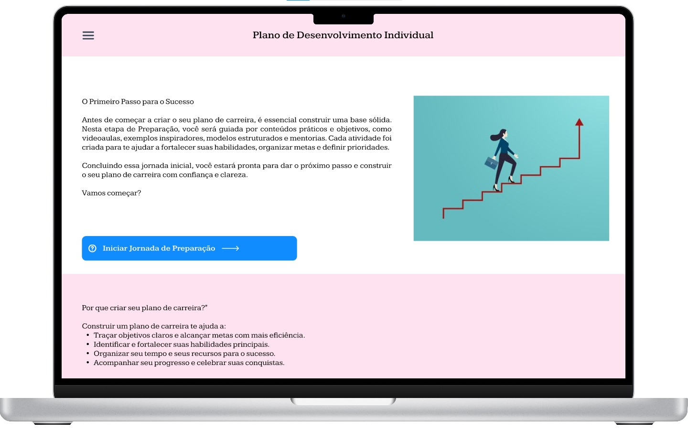
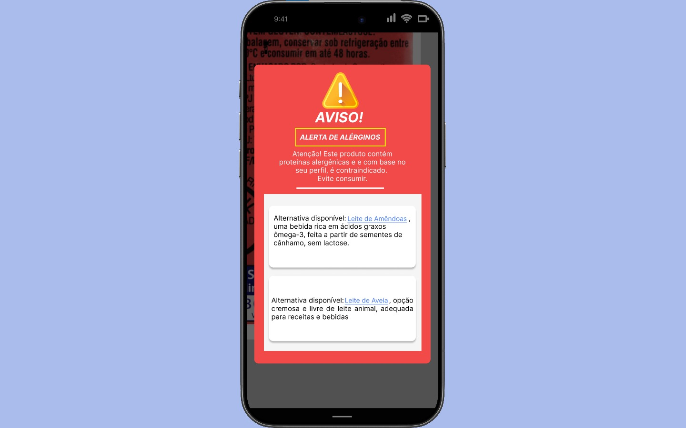
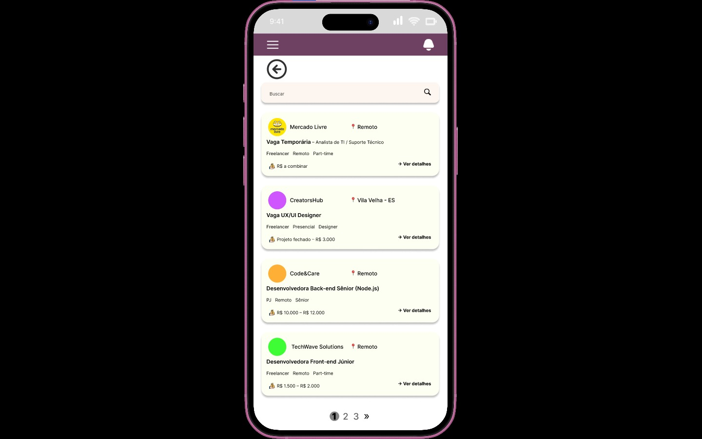

Bruno Araújo
Designer UX/UI com base em desenvolvimento front-end, focado na criação de interfaces intuitivas, funcionais e centradas na experiência do usuário.
UX Research • Wireframes • Prototipação • Figma
Designer UX/UI com base em desenvolvimento front-end, focado na criação de interfaces intuitivas, funcionais e centradas na experiência do usuário.
UX Research • Wireframes • Prototipação • Figma
Designer UX/UI em formação com base em desenvolvimento front-end. Tenho interesse em criar interfaces intuitivas, estruturar fluxos de navegação e transformar ideias em experiências digitais funcionais.
Busco unir análise, design e desenvolvimento para construir soluções bem estruturadas, funcionais e com impacto real para usuários e empresas.
Utilizo Figma para criação de wireframes, protótipos e organização de fluxos de navegação antes do desenvolvimento das interfaces.
Minha base técnica em desenvolvimento web me ajuda a criar soluções mais viáveis e alinhadas com times de tecnologia.
Atualmente busco oportunidades como UX/UI Designer Júnior.

Plataforma criada para apoiar mulheres em situação de vulnerabilidade na construção de um plano de carreira e ingresso no mercado de trabalho.
Pesquisa
Análise do público e conversa com empresa parceira.
Fluxo do usuário
Usuária acessa → consome conteúdo → cria currículo.
Wireframes
Estrutura inicial das telas e navegação.
Protótipo
Protótipo interativo no Figma.
Resultado
Protótipo funcional demonstrando fluxo de orientação profissional.

Aplicativo para ajudar pessoas com alergias a identificar ingredientes de produtos.
Fluxo
Cadastro → escanear produto → alerta de alergia.
Wireframes
Login, cadastro, escaneamento e resultado.
Protótipo
Simulação do fluxo completo no Figma.
Resultado
Protótipo demonstrando alerta automático de alergênicos.

Plataforma de vagas para mulheres e pessoas LGBTQIA+ na área de tecnologia.
Pesquisa
Observação de dificuldades de colegas do curso.
Fluxo
Cadastro → acessar vagas → candidatura.
Wireframes
Estrutura de login, perfil e vagas.
Protótipo
Protótipo navegável no Figma.
Resultado
Protótipo demonstrando plataforma inclusiva de oportunidades.
Formação que desenvolveu organização, visão de processos e responsabilidade profissional.
Formação técnica com foco em programação, fundamentos de sistemas e desenvolvimento de aplicações.
Graduação com foco em lógica, desenvolvimento web e estruturação de sistemas.
Atuação em ambiente institucional com sistemas internos, participando do desenvolvimento, manutenção e apoio a soluções técnicas.
Atuação com atendimento técnico, resolução de problemas, suporte a usuários e contato direto com demandas reais.